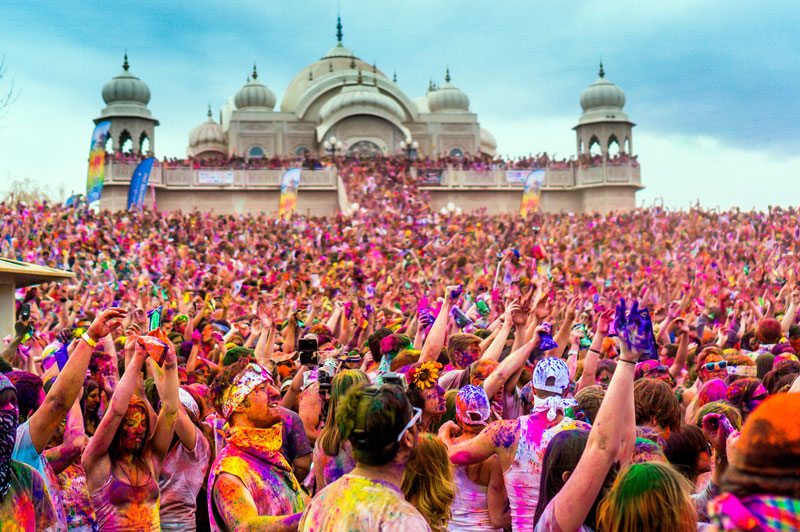

1:Christmas- Birth of Jesus Christ

The birth of Jesus Christ is celebrated with ecstatic merriment and wonderful joy, throughout India. The warm smell of walnut cakes can be inhaled in every household. As if captivated by a confetti of Santa caps, Christmas sees the prevalence of these caps and reindeer headgear decorating the heads of civilians. Many people decorate Christmas trees in their homes with colourful stars and hanging balls. People also visit the Church to seek the holy blessings of Christ on this auspicious festival.
Best Places to Celebrate Christmas:- Shillong
- Mumbai
- Pondicherry
- Goa
- Kerala
2:Diwali - Festival of Lights
This pan Indian festival, famous for lighting up our lives, Diwali is joyously celebrated globally now. Sending a powerful message of the triumph of good over evil, the festival is celebrated in every nook and corner of the country. People enjoy the festival of lights by beginning the day with an auspicious pooja, followed by welcoming the night with new traditional clothes, sweets and glowing deeyas. The houses are decorated with garlands of electric lights and colourful rangolis. Ignite the light of brotherhood and goodness in you being through the festival of Diwali.
Best Places to Celebrate Diwali:- Varanasi
- Jaipur
- Delhi
3: Holi- Festival of Colors

The Pandora box of wholesome fun and good natured pranks characterise the atmosphere in the colourful festival of Holi. This festival is also slowly gaining popularity in the global sphere. Holi is celebrated by throwing and applying colours on each other, in myriad hues of jubilance. The festival is even played by throwing and splashing water on each other, via a friendly weaponry of water guns and water balloons. Immerse yourself in the pinks, greens and reds of Holi, and forget all your blues for this day.
Best Places to Celebrate Holi:- Goa
- Delhi
- Mathura
- Rajasthan